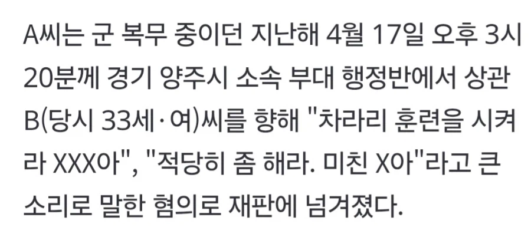

https://n.news.naver.com/article/215/0001266756?sid=102
작녀 4월17일이 금요일인데
금요일 오후 3시에 뭘 했길래 차라리 훈련을 시키라고 했을까

https://n.news.naver.com/article/215/0001266756?sid=102
작녀 4월17일이 금요일인데
금요일 오후 3시에 뭘 했길래 차라리 훈련을 시키라고 했을까
여군이면 뭐...
지 기분따라 판단과 지시가 '크게' 바뀜
예외인 소수가 있겠지만 소수에 집중할 가치는 없음
진짜 궁금하네 ㅋㅋㅋ
군 하극상은 변명할 여지 없이 중죄지만
이건 사연 들을 필요도 없이 병사 편 들고 싶네
기싸움
콜오브듀티지 ㅋㅋㅋㅋ
왜 상관에게 씨발련이라고 한건가요?
그것이 제 의무니까요.
ㅋㅋㅋㅋㅋㅋ간부도 어지간히 폐급이었나보다.
사유 존나 궁금하다 ㅋㅋㅋㅋㅋㅋㅋㅋㅋㅋㅋㅋ
개궁금하네. 이거 뉴스 탄거 커뮤 여기저기 돌 껀데 당사자가 썰 안풀어주나?
우러전처럼 현장에서 작전중이었으면 대갈통 바로 쏴버렸겠네
개인적으로 잘한거라도 생각한다
선고유예 뜰 정도면 대체 ㅋㅋ
에휴 또 햇빛은 본적도 없는 행정반 죽돌이 미친년이 지랄했나보네
여군한텐 개길만 하지
인사담당관 출신이 사람이 알려줌
여군은 씨발년이랑 씨발년이 될 예정일 년들이 99퍼센트임
댓글 다 봤는데 어지간히 하긴했나보네
뉴스에 저런거 내용까지 다 말하는데
병사 발언만 말하는거보면
내 기준 여군은 여경보다 좀 더 밑의 신뢰성을 가지고 있음
왜냐면 겪어봤기 때문에
더쿠애들만 왜 처벌이 저거냐고 개발작중임ㅋㅋㅋㅋ
역시 군대다녀온 사람들만 알지
뭐 일단 살고봐야지....
사건 당시가 금요일 오후 3시인건가
33살이면 어린 축인데 뭐 육사나 3사출신인가
'여군'
"당시 피고인의 상황, 발언 경위와 내용 등을 참작했다" 이 부분이 꽤 흥미로움.
높은 양반들이 제일 싫어하는게 하극상일텐데
어떤일이 벌어졌길래 하극상 병사를 참작해준거고, "차라리 훈련을 시켜라"는 말이 병사 입에서 튀어나올까.
존나 궁금하넼ㅋㅋㅋㅋㅋㅋ
ㅋㅋㅋㅋㅋ일단 총대맨 열사네
진짜 여군은 타고난 신체적 특징과 군조직이라는 특수성 때문에 폐급이 될 확률이 너무 높음
"선고유예"
판사가 봐도
"아씁 이건 나였어도 ㅋㅋ"
할 정도였나보네
집행유예도 아니고.. 궁예짓 안해야지
ㅋㅋㅋ 어떤 호작질을 했길래 미친년 소릴 들었을까 존나 궁금ㅋㅋ
여군은 그냥 정훈교육이나 군종간부만 시키면안되나 병사한테 지휘권 가지면안될거갗은데
그러기엔 겁나 멋진 여장군인가 육사출신 한 분 계시지 않나
한명...??
인사행정관한테 쌍욕을 박고도 선고유예면 대체 뭘 한거임 ㅋㅋㅋㅋㅋㅋㅋㅋ
대체 뭔짓을 한거임 시발ㅋㅋㅋㅋ
선고유예면 ㅋㅋㅋㅋㅋ 판사도 에휴.. 하고 넘긴거잖아 ㅋㅋㅋㅋㅋ
저런 말이 나온다는건 진짜 참다가 나온걸텐데
얼마나 지 기분대로 행동하고 명령했을지 감이 안잡히네 ㅋㅋㅋㅋㅋㅋㅋㅋㅋㅋㅋㅋ
선고유예면 욕한건 잘못 맞는데 조사해 보니까 기소 안하고 봐줄정도의 상황이 참작되었다는거잖아
심지어 법적으로는 상관 모독인데...
오히려 기소하면 사실관계가 다 드러나서 그랬을거란 의심도 ㅋㅋㅋ
저거 안봐주면 하극상에서 안끝나서 그럴듯 ㅋㅋ
아..착각한거..기소유예가 아니라 선고유예네.... 이걸 또 멱살잡고 기소한거 같은데... 진짜 내용 궁금해진다
행정반에서 뭘 어케한거지?